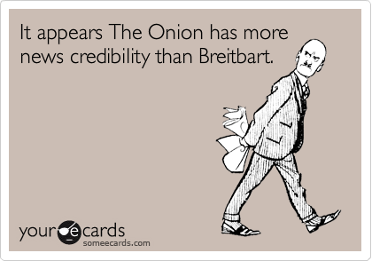
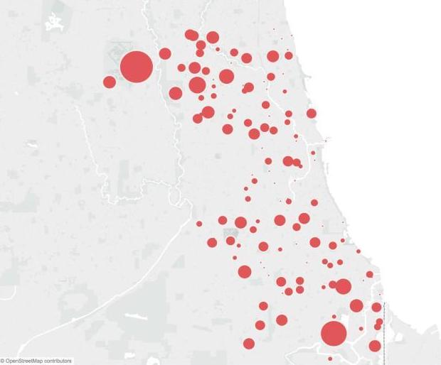
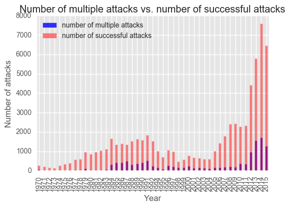

Predicting Congressional Bill Passage
Looking at how Congress works has always been an area of intense study, and analyses like this can be incredibly effective, especially when they can give citizens a clear picture of how likely it is for a bill that directly affects them to become a law.
Academic research has shown that the text of the bill is incredibly predictive. I was interested in seeing if the summaries of bills would be predictive by themselves.
After some data cleaning and discarding documents with inadequate information, I worked with about 12,000 bills, resolutions, and amendments from the 113th and 114th Congress in total, and focused my initial analysis on the summaries written by the Congressional Research Service. Of my dataset, roughly 7.5% of the bills, resolutions, and amendments were passed.
I managed to beat the (pretty high) baseline score by accurately predicting whether or not a bill would pass roughly 96% percent of the time. I also used a different technique to pull out the key topics associated with each bill.
I'll be tweaking the model and using the output to try to predict how individual Congressional representatives will vote to help activists be more efficient in the way they contact their reps!
Image source: Clerk of the U.S. House of Representatives
Data Manipulation with Pandas
Pandas are basically my favourite Python library. It's easy to use, extremely versatile, and open source.
As one of my first forays into data science, I explored a dataset that contained Billboard hits in 2000 to see what interesting insights I could gain from the information.
It was really interesting to use a dataset that appears pretty clean at first, and go through and discover more subtle errors when I took a closer look.
The code can be used as a guide on what you can do with the Pandas library.
Image source: billfromesm, Flickr

Breitbart vs. The Onion: Who Tweeted What?
Fake news has become something none of us can escape. I decided to take a slightly more light-hearted approach to the whole phenomenon and see if I could train an algorithm to predict whether or not a given tweet was from Breitbart or from The Onion.
The project took me an afternoon at most, and was a great way to look at different classification models and see which perform the best with text analysis.
The code can be used as a guide on how to pull tweets using the Twitter API and how the TextBlob library can be used to conduct a basic sentiment analysis on the tweets.
Image source: Someecards

Predicting West Nile in Chicago
The city of Chicago's Department of Public Health takes disease prevention seriously. Recently, they sponsored a Kaggle competition for teams to predict where and when they should spray to mitigate West Nile Virus.
This was a great chance to work with some of my peers at General Assembly to see how accurate a model we could build in a short time by pooling our skills (when our powers combine...)
Our model was highly predictive, and our success was based on our in-depth research into the field of disease control to determine exactly which variables would be most predictive in determining outbreak patterns.
Scraping the web and predicting salaries
This project combined some of my favourite things: webscraping, data cleaning, and NLP. The information for this project was scraped from Indeed.com (sorry, Indeed! It was all used for acamedia, I promise!) and I count vectorized job titles and summaries to try to predict when a job would be above or below the median data scientist salary in the U.S.
The code can be used as a guide on building a pretty powerful tool that scrapes and cleans data before saving it into a dataframe.
Image source: Pingin Saorstat Eireann

Back to Bayesics
I'm pretty proud of that pun.
My Masters' degree focused on studying miltant groups and extremist activities. I'd used information from the Global Terrorism Database to build my own database as part of my thesis, and was really excited to look at it from a new angle (a Bayesian one!)
The codebook contains an in-depth exploration of the database and a Bayesian look at the use of suicide bombs by two groups.
One of the things the GTD is famous for is having absolutely no information on terrorist attacks in 1993. I took a stab at trying to extrapolate how many bombings there could have been using time series.